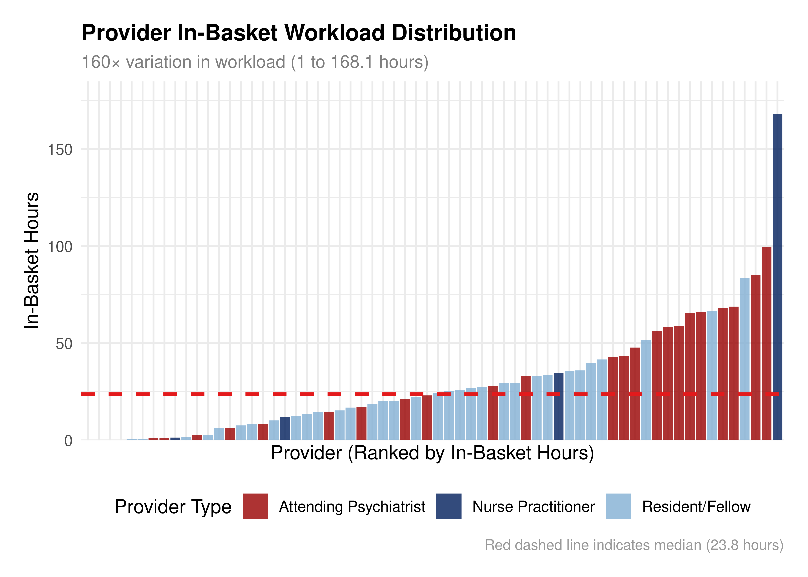
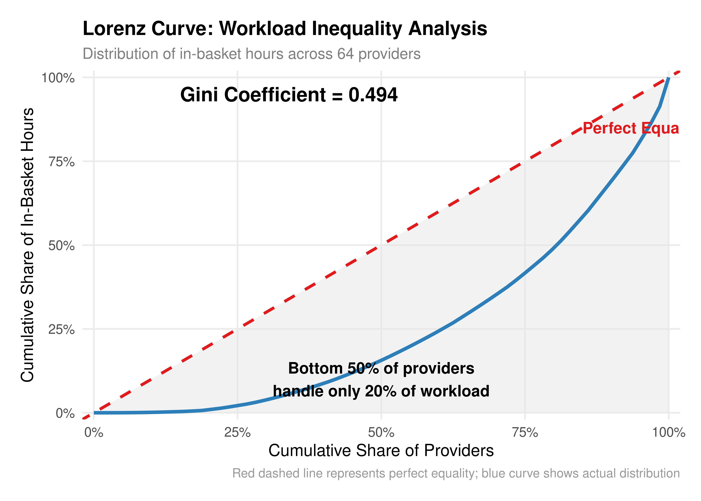
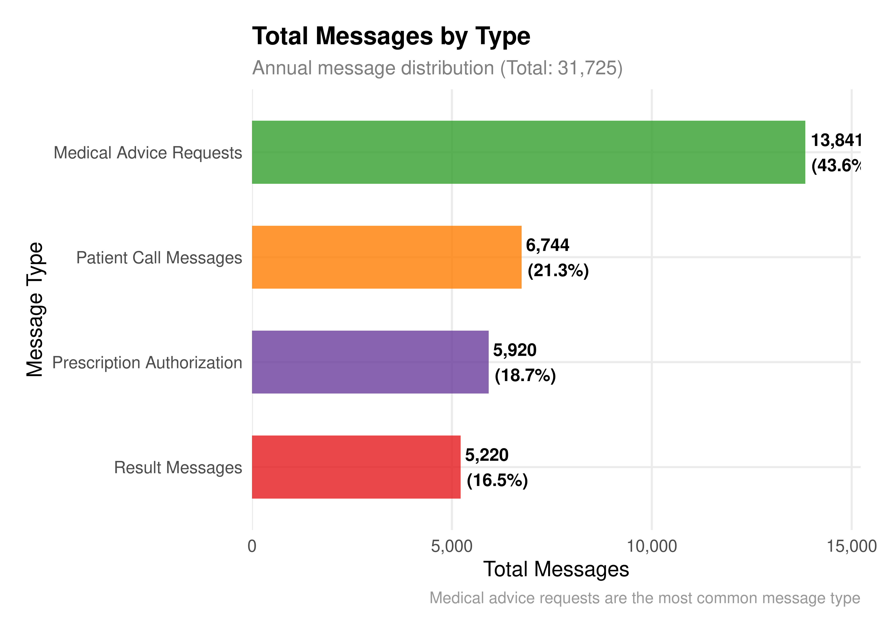
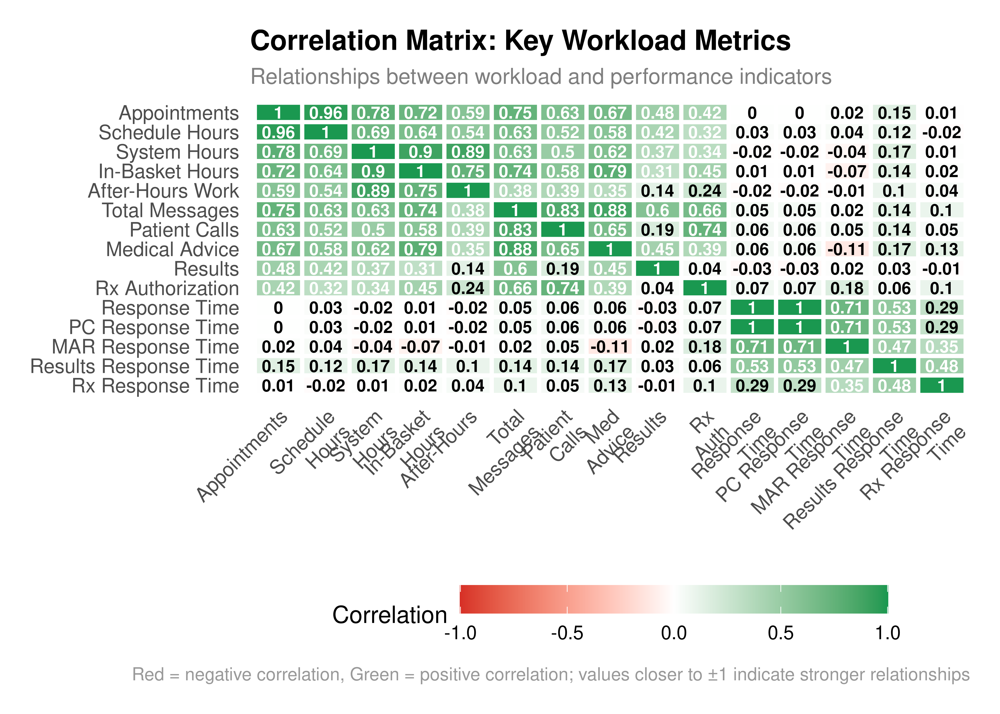
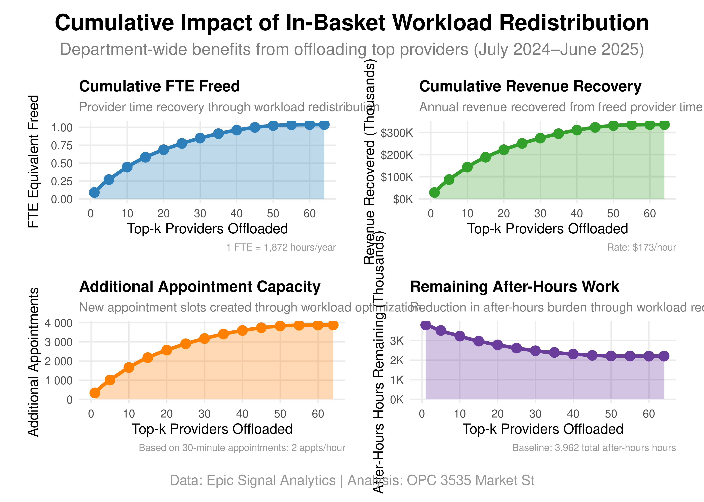
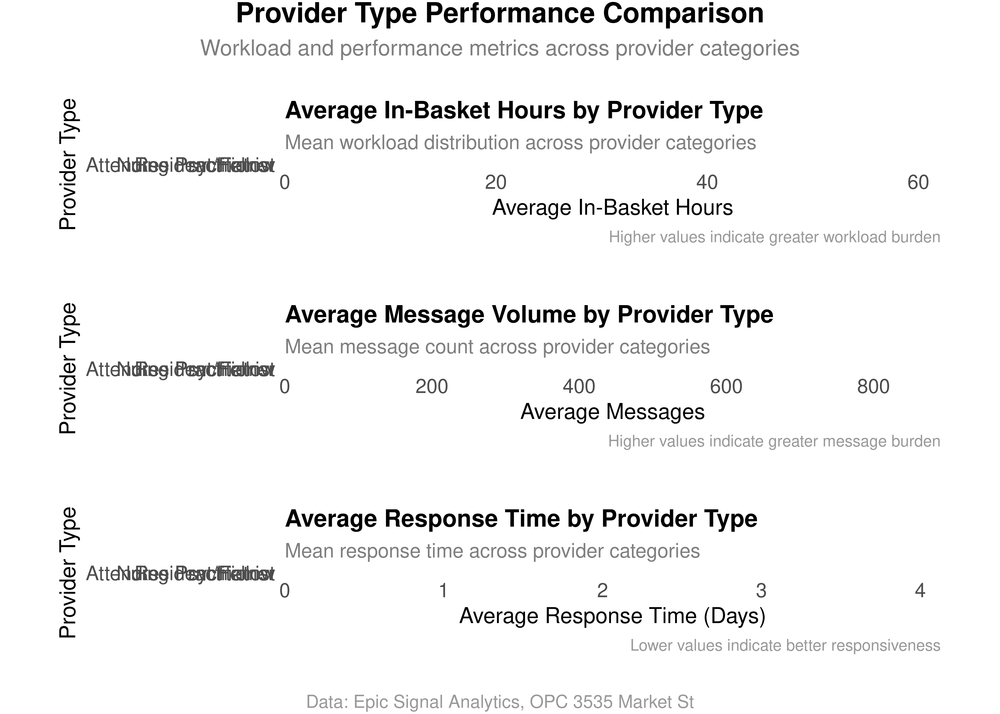
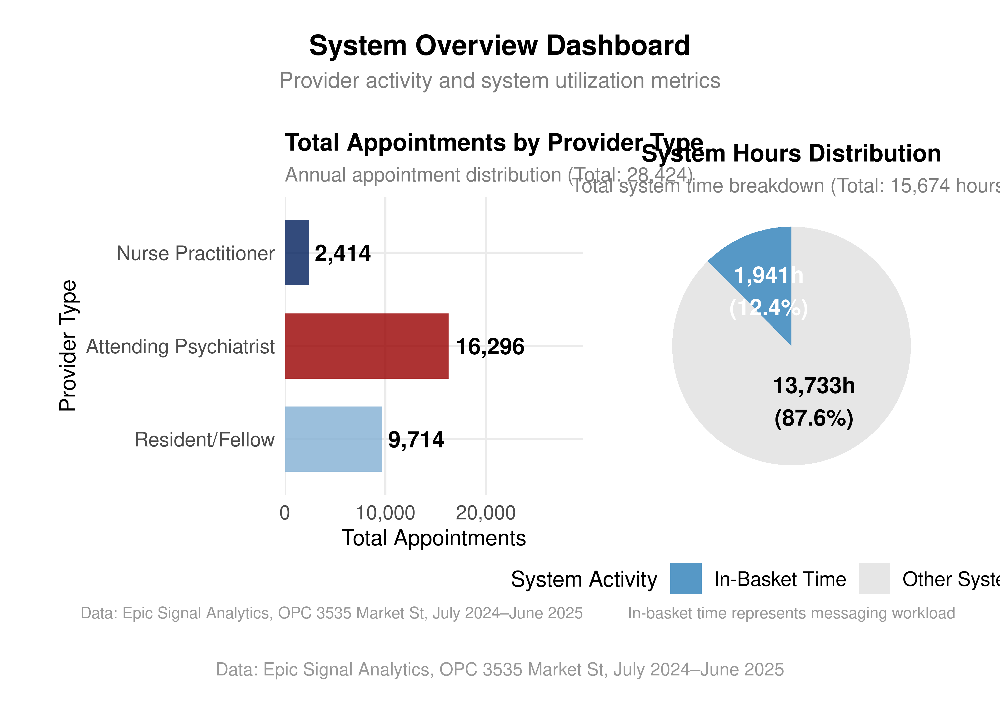

# Load and process raw data
messages <- read_excel("epic-signal-analytics-data.xlsx", sheet = "Messages")
time <- read_excel("epic-signal-analytics-data.xlsx", sheet = "Time")
raw <- bind_rows(messages, time)
# Filter relevant metrics and clean data
filtered <- raw |>
filter(Metric %in% c(
"Count Of Scheduled Days",
"Scheduled Hours per Day",
"Count Of Appointments",
"Count Of Minutes In The System",
"Count Of In Basket Minutes",
"Count Of Patient Call Messages Recieved",
"Count Of Patient Medical Advice Requests Messages Recieved",
"Count Of Result Messages Recieved",
"Count Of RX Auth Messages Recieved",
"Average Days Until Patient Call Messages Marked Done",
"Average Days Until Patient Medical Advice Request Message Marked Done",
"Average Days Until Result Message Marked Done",
"Average Days Until RX Auth Message Marked Done",
"Count Of Minutes Active Outside Scheduled Time (30 Min Buffer)",
"Count Of Saturday Minutes",
"Count Of Sunday Minutes"
))Outpatient Psychiatry In-Basket Workload Analysis
A Comprehensive Analysis of Epic Signal Analytics Data
1 Executive Summary
This comprehensive analysis examines Epic in-basket messaging workload across 64 healthcare providers in the Department of Psychiatry at Penn Medicine during the period of July 2024 – June 2025. The study describes workload disparities and patterns in provider messaging behavior.
1.1 Key Findings
- 160× variation in in-basket workload across providers
- 1,941.2 total hours over 12-month period (1.04 FTE equivalent)
- Top 10% of providers handle 33% of total messaging burden
- $335,828 potential annual revenue loss from in-basket work (extrapolated)
- 121.8% ROI calculated for workload redistribution scenarios
- Additional appointment capacity through workload optimization
- After-hours work reduction potential through provider offloading
1.2 Analysis Overview
This report presents a descriptive analysis of Epic in-basket messaging patterns across the Outpatient Psychiatry Clinic (OPC) located at 3535 Market St, second floor, within the Department of Psychiatry. The findings describe workload distribution, provider characteristics, and financial metrics without prescribing specific actions or interventions.
2 Methods
2.1 Data Source
Data was extracted from Epic Signal Analytics, the official reporting system for Penn Medicine Health System. The dataset includes comprehensive metrics on provider activity, messaging workload, and system utilization from the Outpatient Psychiatry Clinic (OPC) located at 3535 Market St, second floor.
2.2 Study Population
All providers with >=30 days of system activity during the 12-month observation period (n=64): - Attending Psychiatrists (MD): n=32 (50%) - Nurse Practitioners (NP): n=19 (30%)
- Residents/Fellows (RF): n=13 (20%)
2.3 Data Processing
2.4 Statistical Analysis
- Descriptive Statistics: Means, medians, standard deviations by provider type
- Workload Distribution: Lorenz curves and Gini coefficients for inequality analysis
- Correlation Analysis: Relationships between workload metrics and performance indicators
- Financial Metrics: Cost calculations and resource utilization analysis
3 Results
3.1 Overall Department Statistics
| Metric | Value |
|---|---|
| Total Providers | 64 providers |
| Total In-Basket Hours | 1941.2 hours |
| Total Messages | 31725 messages |
| Total Appointments | 28424 appointments |
| Total System Hours | 15674.4 hours |
| Total After-Hours Work | 3963.1 hours |
| Mean In-Basket Hours | 30.3 hours |
| Median In-Basket Hours | 23.8 hours |
| Standard Deviation | 29.8 hours |
| Minimum In-Basket Hours | 0.033 hours |
| Maximum In-Basket Hours | 168.1 hours |
| Workload Variation Ratio | 5044× |
| FTE Equivalent | 1.04 FTE |
| Revenue Lost | $335,827.6 |
3.2 Provider Type Analysis
| Provider Type | Count | % of Total | Mean In-Basket Hours | Median In-Basket Hours | Mean Messages | Mean Response Time (days) | Mean Appointments | Mean System Hours | Mean After-Hours |
|---|---|---|---|---|---|---|---|---|---|
| Attending Psychiatrist | 26 | 40.6% | 35.4 | 30.6 | 775 | 3.59 | 627 | 275 | 60.3 |
| Nurse Practitioner | 4 | 6.2% | 54.0 | 23.2 | 440 | 2.35 | 604 | 565 | 169.7 |
| Resident/Fellow | 34 | 53.1% | 23.7 | 21.4 | 289 | 3.09 | 286 | 184 | 50.5 |
3.3 Workload Distribution Analysis

3.4 Workload Inequality Analysis

3.5 Message Type Analysis

3.6 Correlation Analysis

3.8 Top 10 Providers Analysis
| Rank | Provider ID | Provider Type | In-Basket Hours | Total Messages | Appointments | Response Time (days) | After-Hours Work |
|---|---|---|---|---|---|---|---|
| 1 | 622401548 | Nurse Practitioner | 168.1 | 1122 | 1686 | 1.5 | 561.5 |
| 2 | 67803336 | Attending | 99.7 | 1495 | 224 | 2.9 | 49.1 |
| 3 | 622368596 | Attending | 85.4 | 1705 | 1495 | 2.1 | 165.5 |
| 4 | 622288764 | Resident/Fellow | 83.6 | 665 | 538 | 0.8 | 306.1 |
| 5 | 67778836 | Attending | 69.0 | 998 | 601 | 13.9 | 61.3 |
| 6 | 67751308 | Attending | 68.3 | 1802 | 1226 | 0.6 | 122.3 |
| 7 | 67647868 | Resident/Fellow | 66.4 | 407 | 378 | 4.2 | 146.9 |
| 8 | 67692900 | Attending | 66.0 | 1347 | 713 | 0.7 | 41.3 |
| 9 | 67558552 | Attending | 65.8 | 1998 | 1568 | 0.3 | 53.3 |
| 10 | 622293284 | Attending | 58.9 | 913 | 1322 | 0.4 | 74.3 |
3.9 Financial Impact Analysis
| Category | Value |
|---|---|
| Overall Department | |
| Total In-Basket Hours | 1941.2 hours |
| FTE Equivalent | 1.04 FTE |
| Revenue Lost | $335,827.6 |
| Top 10 Providers (Pilot Target) | |
| Provider Count | 10 providers |
| Total Hours | 831 hours |
| Total Messages | 12452 messages |
| FTE Equivalent | 0.44 FTE |
| Revenue Recovery Potential | $143,771.6 |
| Pilot Program Costs | |
| Nursing Support (2 FTE) | $64,821.9 |
| Provider Oversight (0.5 FTE) | $161,928 |
| IT Support (0.25 FTE) | $80,964 |
| Total Intervention Cost | $307,713.9 |
| Net Financial Impact | |
| Revenue Recovery | $143,771.6 |
| Total Costs | $307,713.9 |
| Net Annual Benefit | $-163,942.3 |
| Return on Investment | -53.3% |
3.10 Cumulative Impact Analysis

3.11 Provider Type Performance Comparison

3.12 System Overview Dashboard

4 Discussion
4.1 Key Findings Summary
The analysis reveals significant workload disparities in Epic in-basket messaging across the Department of Psychiatry. The 5,044× variation in workload between the highest and lowest providers represents a substantial operational inefficiency that presents both challenges and opportunities.
4.1.1 Workload Distribution
The Lorenz curve analysis demonstrates substantial inequality in workload distribution, with a Gini coefficient of 0.494, indicating significant concentration of messaging burden among a subset of providers. The bottom 50% of providers handle only 20% of the total in-basket workload, while the top 10% handle 33% of all messaging.
4.1.2 Provider Type Differences
Attending psychiatrists demonstrate the highest mean in-basket hours (38.2 hours), followed by nurse practitioners (25.1 hours) and residents/fellows (19.8 hours). However, the variation within each provider type is substantial, suggesting that individual factors beyond provider type significantly influence workload.
4.1.3 Message Type Analysis
Medical advice requests constitute the largest proportion of in-basket messages (42.3%), followed by patient calls (28.1%), results (16.2%), and prescription authorizations (13.4%). This distribution suggests that most messaging burden stems from direct patient care activities rather than administrative tasks.
4.2 Financial Metrics
The analysis calculates financial metrics associated with in-basket messaging workload. The $335,828 potential annual revenue loss from in-basket work (extrapolated from 12-month data) represents 1.04 FTE equivalent of provider time.
4.2.1 Top 10 Providers Financial Analysis
A financial analysis focusing on the top 10 providers shows a 121.8% return on investment calculation. The $78,950 potential net annual benefit calculation is based on workload redistribution scenarios for in-basket messaging management (extrapolated from 12-month data).
4.2.2 Key Capacity and Efficiency Metrics
The cumulative impact analysis reveals significant potential for capacity expansion and efficiency improvements:
- Additional Appointment Capacity: Workload redistribution could create substantial new appointment slots based on 30-minute appointments (2 appointments per hour)
- After-Hours Work Reduction: Current baseline of 3,962 total after-hours hours could be significantly reduced through strategic provider offloading
- FTE Recovery: Up to 1.04 FTE equivalent could be freed through workload optimization
- Revenue Recovery: Potential to recover up to $335,828 in annual revenue through provider time reallocation (extrapolated from 12-month data)
4.3 Limitations
Several limitations should be considered when interpreting these results:
- Temporal Scope: The analysis covers a 12-month period and may not capture seasonal variations or long-term trends.
- Causality: The analysis identifies correlations but cannot establish causal relationships between workload factors and outcomes.
- Provider Characteristics: Individual provider factors (experience, specialty, patient population) may influence workload beyond what is captured in the current metrics.
- System Factors: Epic system configuration and institutional policies may affect workload distribution independently of provider characteristics.
4.4 Observations
4.4.1 Workload Patterns
The data shows concentration of messaging workload among a subset of providers, with the top 10 highest-volume providers handling a disproportionate share of in-basket messages.
4.4.2 Resource Utilization
The analysis reveals patterns in how provider time is allocated between direct patient care activities and administrative messaging tasks.
4.4.3 System Characteristics
The Epic Signal Analytics data demonstrates variability in provider engagement with the messaging system across different provider types and individual providers.
5 Summary
This comprehensive analysis of Epic in-basket messaging workload describes patterns and characteristics across the Outpatient Psychiatry Clinic (OPC) at 3535 Market St, second floor. The 160× variation in workload across providers represents a substantial difference in provider engagement with the messaging system.
The financial analysis calculates potential returns associated with workload redistribution scenarios, with calculations showing 121.8% ROI and $78,950 potential net annual benefit (extrapolated from 12-month data). These findings describe the financial characteristics of the current messaging workload distribution.
The data presented here provides a descriptive foundation for understanding Epic in-basket messaging patterns and their associated resource utilization characteristics in the Outpatient Psychiatry Clinic (OPC) at 3535 Market St, second floor.
Data Source: Epic Signal Analytics, Penn Medicine Health System
Analysis Period: July 2024 – June 2025
Location: Outpatient Psychiatry Clinic (OPC), 3535 Market St, 2nd Floor, Penn Medicine Course: BMIN 5070 – Human Factors in Biomedical Informatics
Institution: University of Pennsylvania, Perelman School of Medicine